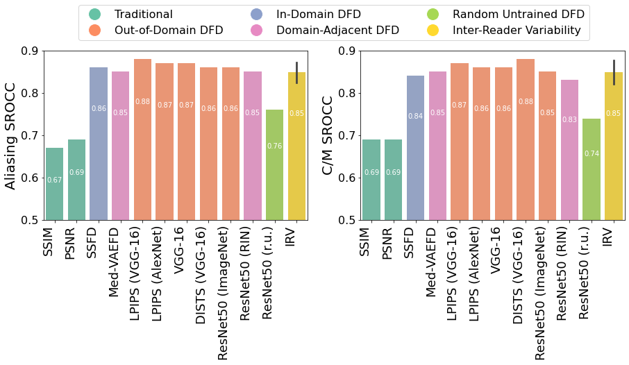
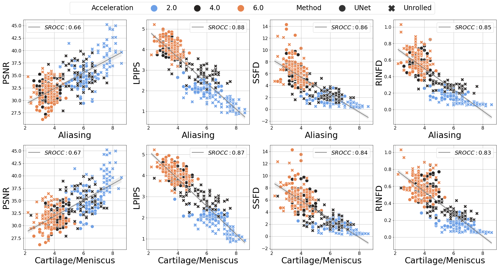
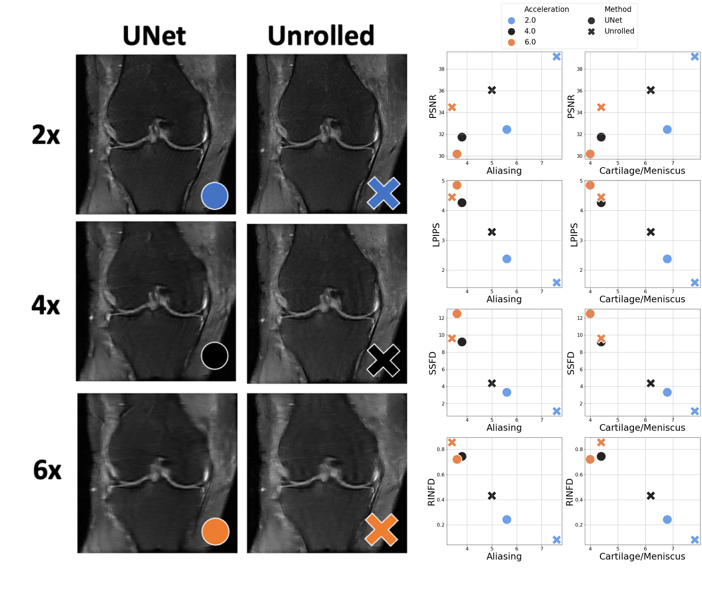
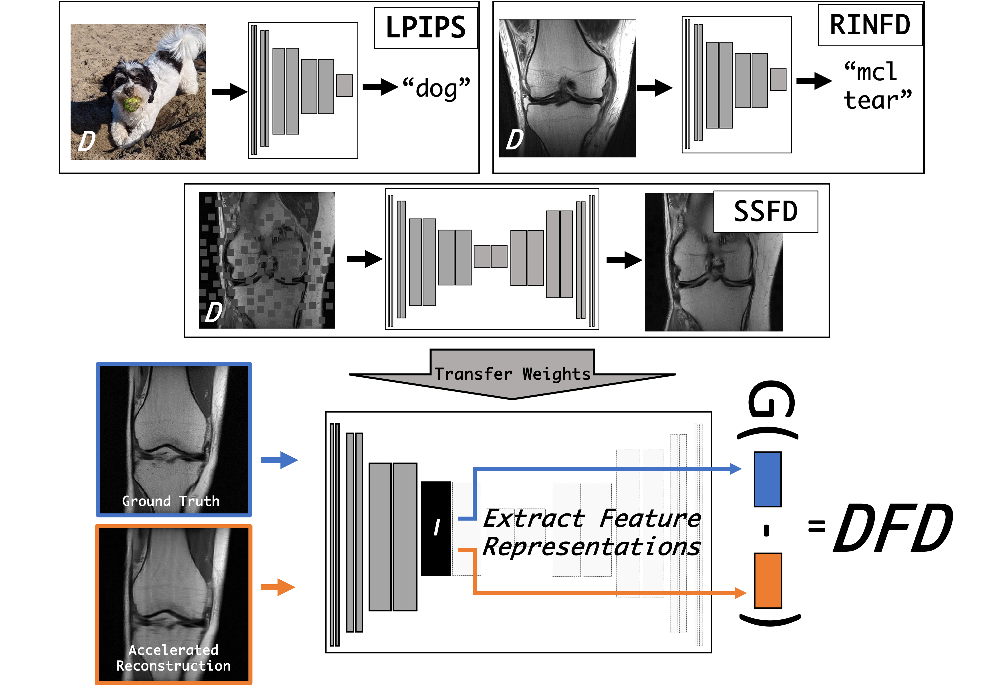

|
Evaluation of MR reconstruction methods is challenged by the need for image quality (IQ) metrics which correlate strongly with radiologist-perceived IQ. We explore Deep Feature Distances (DFDs) as MR reconstruction IQ metrics, whereby distances between ground truth and reconstructed MR images are computed in a lower-dimensional feature space encoded by a CNN. In addition to comparing DFDs to two commonly used pixel-based MR IQ metrics in PSNR and SSIM via correlations to radiologist reader scores of MR image reconstructions, we explore the impact of domain shifts between the DFD encoder training data and the evaluated MR images. In particular, we assess two state-of-the-art but "out-of-domain" DFDs with encoders trained on natural images, an in-domain DFD trained on MR images alone, and propose two domain-adjacent DFDs trained on large medical imaging datasets (not limited to MR data). IQ metric performance is assessed via their correlations to 5 expert radiologist reader scores of MR image reconstructions. We make three striking observations: 1) all DFDs out-perform traditional IQ metrics, 2) DFDs performance approaches that of radiologist inter-reader variability, and, 3) surprisingly, out-of-domain DFDs perform comparably as an MR reconstruction IQ metric to in-domain and domain-adjacent DFDs. These results make it evident that DFDs should be used alongside traditional IQ metrics in evaluating MR reconstruction IQ, and suggest that general vision encoders are able to assess visual IQ across image domains. |
|  |
|
| Mean reader score correlations to traditional and DFD IQ metrics based on encoder training data domain D. Aliasing reader score SROCC values are shown on left with cartilage and meniscus reader score SROCCs on the right. DFDs out-perform tradition IQ metrics and are comparable to inter-reader variability (IRV), but out-of-domain DFDs perform comparably as an MR reconstruction IQ metric to in-domain and domain-adjacent DFDs. |
|  |
|
| Example traditional (PSNR), out-of-domain (LPIPS), in-domain (SSFD) and domain- adjacent (RINFD) IQ metric values versus mean reader scores for aliasing (top) and carti- lage/mensiscus assessment (bottom). Each point corresponds to a single image taken from the center slice from 61 MR reconstruction images, each with 2x (blue), 4x (black) and 6x (orange) accelerations with a UNet (circle) and unrolled (X’s) networks. Higher reader score values correspond to better radiologist perceived IQ. |
|  |
|
| All data used in this study has been made public. Above is an example of the six reconstruction techniques (left), and plots of their IQ metrics versus mean of 5 radiologist reader scores assessed for the presence of aliasing and diagnostic quality of the cartilage and meniscus (right). The center slice from all 361 MR images for the (3 accelerations) x (2 methods) x (61 patients), along with corresponding reader scores from each of the 5 radiologists are available for download here. |
|  | Philip M Adamson, Arjun D Desai, Jeffrey Dominic, Christian Bluethgen, Jeff P. Wood, Ali B Syed, Robert D. Boutin, Kathryn J. Stevens, Shreyas Vasanawala, John M. Pauly, Akshay S Chaudhari, Beliz Gunel Using Deep Feature Distances for Evaluating MR Image Reconstruction Quality 2023. (hosted on Open Review) |
AcknowledgementsThis work was supported by NIH R01 AR077604, R01EB002524, R01 AR079431. It was also supported by the Radiological Sciences Laboratory Seed Grant from Stanford University, and the NSF Graduate Research Fellowship under Grant No. DGE-2146755. |